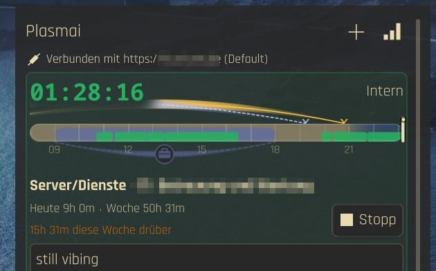

Live Panel Timer
Live-Timer im Panel
Running project, activity, and elapsed time in the Plasma panel. No extra windows.
Laufendes Projekt, laufende Tätigkeit und verstrichene Zeit direkt im Plasma-Panel. Keine zusätzlichen Fenster.
Favorites & Recents
Favoriten & Zuletzt genutzt
Pin project/activity pairs. Switch tasks with one click and a confirmation dialog.
Projekt-/Tätigkeitspaare anheften. Aufgaben mit einem Klick und Bestätigungsdialog wechseln.
Statistics
Statistik
Hourly bar charts, project gantt, activity donut charts. Today and week at a glance.
Stundenbalken, Projekt-Gantt und Tätigkeits-Donut-Diagramme. Heute und Woche auf einen Blick.
Day Sparkline
Tages-Sparkline
Work-hours bar with sun/moon arcs, overtime segments, and hour ticks in the header.
Arbeitszeitleiste mit Sonnen-/Mondbogen, Überstundenabschnitten und Stundenmarken im Kopfbereich.
Tags & Billable
Tags & Abrechenbar
Tag entries and mark billable. Kimai auto-resolves billable from activity/project/customer.
Einträge taggen und als abrechenbar markieren. Kimai leitet „abrechenbar“ automatisch aus Tätigkeit, Projekt und Kunde ab.
KWallet Secrets
KWallet-Secrets
API tokens stored in KWallet. Multiple profiles per service, shared across instances.
API-Tokens liegen in KWallet. Mehrere Profile pro Dienst, über Instanzen hinweg geteilt.
Edit Running & Stopped
Laufende & gestoppte bearbeiten
Edit start time, project, activity. Split, delete, or edit stopped recents from the overflow menu.
Startzeit, Projekt und Tätigkeit ändern. Gestoppte Einträge über das Überlaufmenü teilen, löschen oder bearbeiten.
Idle Auto-Stop
Automatisch stoppen bei Inaktivität
Stop tracking after idle time. X11 and Wayland with automatic detection.
Zeiterfassung nach Inaktivität stoppen. X11 und Wayland mit automatischer Erkennung.
12 Languages
12 Sprachen
EN, DE, FR, ES, IT, NL, PT (BR), PL, UK, RU, JA, ZH (CN).
EN, DE, FR, ES, IT, NL, PT (BR), PL, UK, RU, JA, ZH (CN).
Android & Plasma Mobile
Android & Plasma Mobile
A Kirigami app with the same backends: timer, favorites, recents, manual entries, statistics and settings. Built from app/, no ready-made APK yet.
Eine Kirigami-App mit denselben Backends: Timer, Favoriten, Zuletzt genutzt, manuelle Einträge, Statistik und Einstellungen. Gebaut aus app/, noch ohne fertiges APK.
Film Day View
Drehtag-Ansicht
Shooting-day entry for Kimai: begin, end, break, catering, day type, shooting day, extra pay and note. With the Drehzettel plugin the extras are stored on the server.
Drehtag-Erfassung für Kimai: Beginn, Ende, Pause, Catering, Tagestyp, Drehtag, Zusatzgage und Anmerkung. Mit dem Drehzettel-Plugin liegen die Extras auf dem Server.
Trips
Fahrten
With the Anfahrten plugin: log a trip, link it to a time entry, and accept or dismiss trips detected from Dawarich. Statistics show the km of the week and month.
Mit dem Anfahrten-Plugin: Fahrten erfassen, mit einem Zeiteintrag verknüpfen und aus Dawarich erkannte Fahrten übernehmen oder verwerfen. Die Statistik zeigt die km der Woche und des Monats.
Tracking without leaving the panel
Zeiterfassung, ohne das Panel zu verlassen
The panel chip shows the running project, activity and elapsed time. Click it to open the popup, on the desktop the widget is the popup. A click on the panel never starts or stops anything by accident.
Der Panel-Chip zeigt laufendes Projekt, Tätigkeit und verstrichene Zeit. Ein Klick öffnet das Popup, auf dem Desktop ist das Widget selbst das Popup. Ein Klick auf das Panel startet oder stoppt nie aus Versehen etwas.
- Start, stop and switch from the popup or the desktop widget
- Click a Recent or a favorite while tracking to confirm the switch; the same activity is not stopped
- Edit the running entry: start time, project, activity, tags and billable
- Pinned favorites and Recents use customer colors
- Starten, stoppen und wechseln im Popup oder im Desktop-Widget
- Klick auf einen Recent-Eintrag oder Favoriten während der Erfassung fragt nach dem Wechsel; dieselbe Tätigkeit wird nicht gestoppt
- Den laufenden Eintrag bearbeiten: Startzeit, Projekt, Tätigkeit, Tags und Abrechenbar
- Angeheftete Favoriten und Recents nutzen Kundenfarben

Your day as one bar
Dein Tag als ein Balken
A zoomed bar in the popup header shows your work hours: tracked time in green, overtime segments, hour ticks and sun and moon arcs for your location. Above it, today and the week are compared with your work contract.
Ein gezoomter Balken im Popup-Kopf zeigt deine Arbeitszeit: erfasste Zeit in Grün, Überstunden-Abschnitte, Stundenmarken und Sonnen- und Mondbögen für deinen Standort. Darüber werden Heute und die Woche mit deinem Arbeitsvertrag verglichen.
- Arcs for sun, moon and work can be switched on or off in Display
- The location search waits briefly after typing instead of querying on every keystroke
- Bögen für Sonne, Mond und Arbeit lassen sich unter Anzeige ein- und ausschalten
- Die Ortssuche wartet nach dem Tippen kurz, statt bei jedem Tastendruck abzufragen

Manual entries, done properly
Manuelle Einträge, sauber gemacht
The plus button opens a form for entries you forgot to track. Searchable pickers find projects and activities, and you can create a new customer, project or activity right from the picker.
Der Plus-Knopf öffnet ein Formular für vergessene Einträge. Durchsuchbare Auswahllisten finden Projekte und Tätigkeiten, und einen neuen Kunden, ein neues Projekt oder eine neue Tätigkeit legst du direkt aus der Auswahl an.
- Begin, end and duration with date and time pickers
- Description, tags and billable; Kimai resolves billable automatically from activity, project and customer
- Edit, delete or split stopped Recents from the overflow menu
- Beginn, Ende und Dauer mit Datums- und Zeitauswahl
- Beschreibung, Tags und Abrechenbar; Kimai leitet Abrechenbar automatisch aus Tätigkeit, Projekt und Kunde ab
- Gestoppte Recents bearbeiten, löschen oder teilen über das Überlaufmenü

Charts for today and the week
Diagramme für Heute und die Woche
The chart icon switches to a statistics view. Filter by All, Billable or Not billable and page through days and weeks.
Das Diagramm-Symbol wechselt in eine Statistikansicht. Filtere nach Alle, Abrechenbar oder Nicht abrechenbar und blättere durch Tage und Wochen.
- Time by hour for the selected day
- Projects by day as stacked bars
- Projects by hour as a Gantt-style chart
- Activity distribution for today and this week as donuts
- Zeit nach Stunde für den gewählten Tag
- Projekte nach Tag als gestapelte Balken
- Projekte nach Stunde als Gantt-Diagramm
- Tätigkeitsverteilung für Heute und diese Woche als Donuts

Idle, reminders and notifications
Inaktivität, Erinnerungen und Benachrichtigungen
- Idle dialog when you were away: keep the time, discard the idle time, or discard it and continue
- Idle detection uses the session IdleHint and ScreenSaver on Wayland and
xprintidleon X11; optional auto-stop - Forgot to start? An opt-in reminder, once per day during work hours
- Tracking in progress: one notification when you open the widget while a timer is running
- Overlap check: asks before saving a running-entry start that falls inside the previous timesheet and shows that entry’s end time (on by default)
- Inaktivitäts-Dialog nach deiner Abwesenheit: Zeit behalten, Leerlaufzeit verwerfen oder verwerfen und weitermachen
- Inaktivitätserkennung nutzt unter Wayland den IdleHint der Sitzung und ScreenSaver, unter X11
xprintidle; optionaler Auto-Stopp - Start vergessen? Eine optionale Erinnerung, einmal pro Tag während der Arbeitszeit
- Erfassung läuft: eine Benachrichtigung, wenn du das Widget bei laufendem Timer öffnest
- Überlappungsprüfung: fragt nach, bevor ein Start des laufenden Eintrags gespeichert wird, der in den vorigen Eintrag fällt, und zeigt dessen Endzeit (standardmäßig an)
Work contract and holidays
Arbeitsvertrag und Feiertage
Today and week totals come from your Kimai work contract. The remaining hours of the week skip vacation and public holidays when the Working Hours & Holidays plugin or the official WorkContractBundle is installed.
Summen für Heute und Woche stammen aus deinem Kimai-Arbeitsvertrag. Die Restzeit der Woche überspringt Urlaub und Feiertage, wenn das Plugin Working Hours & Holidays oder das offizielle WorkContractBundle installiert ist.
- Plasmai detects which of the two plugins is present and re-checks every hour
- Approved absences and public holidays reduce the remaining time; automatic bookings from the WorkContract plugin are not counted twice
- Neither plugin is required; without them you still get today and week totals
- Plasmai erkennt, welches der beiden Plugins vorhanden ist, und prüft stündlich neu
- Genehmigte Abwesenheiten und Feiertage verringern die Restzeit; automatische Buchungen des WorkContract-Plugins werden nicht doppelt gezählt
- Keines der Plugins ist Pflicht; ohne sie bekommst du weiter die Summen für Heute und Woche
Film days and trips
Drehtage und Fahrten
Two more Kimai plugins plug into Plasmai. Both are detected per profile; without them nothing changes.
Zwei weitere Kimai-Plugins docken an Plasmai an. Beide werden pro Profil erkannt; ohne sie ändert sich nichts.
- Drehzettel: break, catering, day category and type, surcharge day, shooting day, extra pay and note are stored in the plugin; Plasmai keeps nothing on the device. Only changed fields are sent
- Without the plugin, without an engagement for that day or while the server cannot be reached, begin and end are saved only
- Anfahrten: log trips from the header, the running entry or a Recent entry's menu; detected trips show above Recent. The app has a Trips page with the month's logbook and Commute today
- The setting Trips hides all of it
- Drehzettel: Pause, Catering, Tageskategorie und -typ, Zuschlagstag, Drehtag, Zusatzgage und Anmerkung liegen im Plugin; Plasmai speichert nichts auf dem Gerät. Gesendet werden nur geänderte Felder
- Ohne Plugin, ohne Engagement an diesem Tag oder solange der Server nicht erreichbar ist, werden nur Beginn und Ende gespeichert
- Anfahrten: Fahrten aus dem Kopf, vom laufenden Eintrag oder aus dem Menü eines Zuletzt-Eintrags erfassen; erkannte Fahrten erscheinen über Zuletzt genutzt. Die App hat eine Seite Fahrten mit dem Fahrtenbuch des Monats und Arbeitsweg heute
- Die Einstellung Fahrten blendet alles aus
How it works
So funktioniert es
Plasmai is a pure QML applet, so the KDE Store package contains no binaries. Every provider is translated into one Kimai-shaped model, so the interface is the same for all services. What a service cannot do is switched off by a capability flag instead of a different UI.
Plasmai ist ein reines QML-Applet, das Paket im KDE Store enthält also keine Binärdateien. Jeder Anbieter wird in ein Kimai-förmiges Modell übersetzt, sodass die Oberfläche für alle Dienste gleich ist. Was ein Dienst nicht kann, wird per Capability-Flag abgeschaltet statt durch eine andere Oberfläche.
- API tokens are stored in KWallet
- Profiles, favorites, display and behavior settings are shared by all instances in
~/.config/com.github.shrippen.plasmai/shared.json - You can keep several profiles per service
- API-Tokens liegen in KWallet
- Profile, Favoriten sowie Anzeige- und Verhaltenseinstellungen teilen sich alle Instanzen in
~/.config/com.github.shrippen.plasmai/shared.json - Pro Dienst kannst du mehrere Profile anlegen
Supported backends
Unterstützte Backends
| BackendBackend | AuthenticationAuthentifizierung | StatusStatus |
|---|---|---|
| Kimai | Bearer token + server URLBearer-Token + Server-URL | Tested, the reference backendGetestet, das Referenz-Backend |
| Clockify | API key; optional regional URLAPI-Key; optionale regionale URL | Experimental, not verified with a live accountExperimentell, nicht mit einem echten Konto geprüft |
| Toggl Track | API token (Basic auth)API-Token (Basic Auth) | Experimental, not verified with a live accountExperimentell, nicht mit einem echten Konto geprüft |
| SolidTime | Bearer JWT + instance URLBearer-JWT + Instanz-URL | Experimental, not verified with a live accountExperimentell, nicht mit einem echten Konto geprüft |
Tags work with Kimai and, where the API takes names, Toggl; Clockify and SolidTime hide the field. Billable works with all four.
Tags funktionieren mit Kimai und, wo die API Namen annimmt, mit Toggl; Clockify und SolidTime blenden das Feld aus. Abrechenbar funktioniert mit allen vier.
Setup
Einrichtung
- Install the widget with the command above, or add it from the KDE Store, then right-click the panel → Add Widgets → search for Plasmai
- Right-click the widget → Configure Plasmai
- Connection: choose the service, set the URL if needed, save the API token and test the connection
- Favorites: pin frequently used project and activity pairs
- Display and Behavior: number of Recents, panel labels, sparkline arcs, idle stop, notifications
- Installiere das Widget mit dem Befehl oben oder aus dem KDE Store, dann Rechtsklick auf das Panel → Widgets hinzufügen → nach Plasmai suchen
- Rechtsklick auf das Widget → Plasmai einrichten
- Verbindung: Dienst wählen, falls nötig die URL setzen, API-Token speichern und die Verbindung testen
- Favoriten: häufig genutzte Projekt-/Tätigkeitspaare anheften
- Anzeige und Verhalten: Anzahl der Recents, Panel-Beschriftung, Sparkline-Bögen, Inaktivitäts-Stopp, Benachrichtigungen
Update with kpackagetool6 -u . -t Plasma/Applet from a checkout, install or update a release with the command in the box at the top and remove it with kpackagetool6 -r com.github.shrippen.plasmai -t Plasma/Applet.
Aktualisieren mit kpackagetool6 -u . -t Plasma/Applet aus einem Checkout, ein Release installieren oder aktualisieren mit dem Befehl in der Box oben und entfernen mit kpackagetool6 -r com.github.shrippen.plasmai -t Plasma/Applet.
Requirements
Voraussetzungen
- KDE Plasma 6
secret-tool(libsecret) for KWallet token storagenotify-send(libnotify) for desktop notificationsxprintidle(X11) orloginctl(Wayland) for idle detection, optional- A supported time tracker with API access
- KDE Plasma 6
secret-tool(libsecret) zum Speichern der Tokens in KWalletnotify-send(libnotify) für Desktop-Benachrichtigungenxprintidle(X11) oderloginctl(Wayland) für die Inaktivitätserkennung, optional- Ein unterstützter Zeiterfassungsdienst mit API-Zugang
Languages
Sprachen
The interface and the KDE Store description are translated into 12 languages: English, German, French, Spanish, Italian, Dutch, Portuguese (Brazil), Polish, Ukrainian, Russian, Japanese and Simplified Chinese.
Die Oberfläche und die KDE-Store-Beschreibung sind in 12 Sprachen übersetzt: Englisch, Deutsch, Französisch, Spanisch, Italienisch, Niederländisch, Portugiesisch (Brasilien), Polnisch, Ukrainisch, Russisch, Japanisch und vereinfachtes Chinesisch.
Questions
Fragen
Can I start or stop by clicking the panel icon?Kann ich per Klick auf das Panel-Symbol starten oder stoppen?
No. A click on the panel chip only opens the popup, so nothing starts or stops by accident. Starting and stopping happen inside the popup or the desktop widget.
Nein. Ein Klick auf den Panel-Chip öffnet nur das Popup, damit nichts versehentlich startet oder stoppt. Starten und Stoppen passieren im Popup oder im Desktop-Widget.
Which backends are production-tested?Welche Backends sind produktiv getestet?
Only Kimai. Clockify, Toggl Track and SolidTime are implemented against their public APIs, but stay experimental until they are verified with live accounts.
Nur Kimai. Clockify, Toggl Track und SolidTime sind gegen ihre öffentlichen APIs umgesetzt, bleiben aber experimentell, bis sie mit echten Konten geprüft sind.
Does it track apps or windows automatically?Erfasst es Apps oder Fenster automatisch?
No. Automatic app tracking, screenshots, invoicing, expenses and team dashboards are on the “won’t do” list. Plasmai stays a small API client in the panel.
Nein. Automatische App-Erfassung, Screenshots, Rechnungen, Spesen und Team-Dashboards stehen auf der „Wird nicht gemacht“-Liste. Plasmai bleibt ein kleiner API-Client im Panel.
Where are my tokens stored?Wo liegen meine Tokens?
In KWallet, via secret-tool. The shared settings file holds your profiles, favorites and options.
In KWallet, über secret-tool. Die geteilte Einstellungsdatei enthält deine Profile, Favoriten und Optionen.
Do I need the holiday plugin for Kimai?Brauche ich das Feiertags-Plugin für Kimai?
No. It only improves the remaining hours of the week. Plasmai works without it and detects it automatically when it is there.
Nein. Es verbessert nur die Restzeit der Woche. Plasmai funktioniert auch ohne und erkennt es automatisch, wenn es vorhanden ist.
Roadmap
Roadmap
Version 2.0 brings the Android and Plasma Mobile app, the film day view with the Drehzettel plugin and trips with the Anfahrten plugin. Before the 2.0 release: at least one non-Kimai backend tested with a live account and no longer experimental. Also open: provider gaps such as Clockify tags. KRunner may come as a separate package, since the Store applet cannot ship binaries. Global shortcuts, D-Bus control and a shutdown hold were tried and removed.
Version 2.0 bringt die App für Android und Plasma Mobile, die Drehtag-Ansicht mit dem Drehzettel-Plugin und Fahrten mit dem Anfahrten-Plugin. Vor dem Release von 2.0: mindestens ein Nicht-Kimai-Backend, das mit einem echten Konto geprüft und nicht mehr experimentell ist. Ebenfalls offen: Lücken bei Anbietern wie Clockify-Tags. KRunner käme gegebenenfalls als eigenes Paket, weil das Store-Applet keine Binärdateien ausliefern kann. Globale Tastenkürzel, D-Bus-Steuerung und eine Herunterfahr-Sperre wurden ausprobiert und wieder entfernt.
Details in ROADMAP.md and the changelog.
Details in der ROADMAP.md und im Changelog.